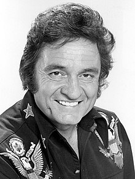

Johnny Cash

Johnny Cash in 1977
Time line
- 1932 - Cash was born J. R. Cash in Kingsland, Arkansas, on February 26, 1932.
- 1954 - In 1954, Cash and his first wife Vivian moved to Memphis, Tennessee.
- 1965 - In June 1965, Cash's camper caught fire during a fishing trip with his nephew Damon Fielder in Los Padres National Forest in California, triggering a forest fire that burned several hundred acres and nearly caused his death.
"Qoute here" - quoter